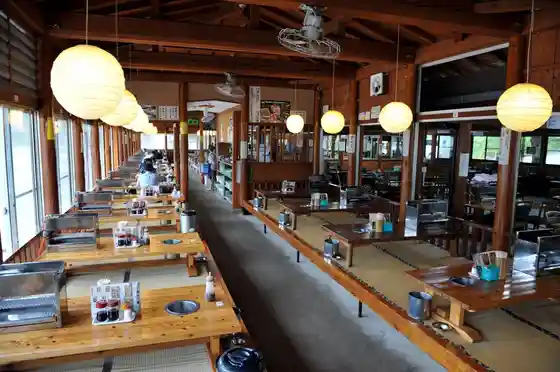
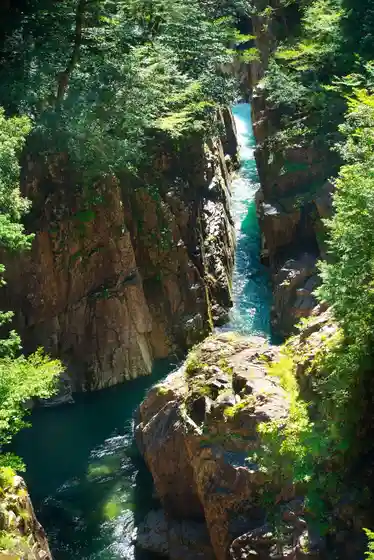
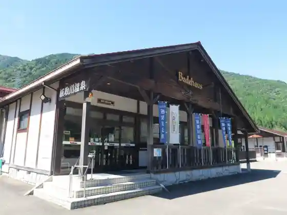

Itadori Kawa Horado Kanko Yana
Seki, Gifu · 0581-58-2217 · Official / source link

Gifuken Hyakunen Park no Autumn Leaves
Seki, Gifu · 0575-28-2166 · Official / source link
Kawaura Gorge
Seki, Gifu · 0581-57-2111 · Official / source link

Feza Museum
Seki, Gifu · 0575-22-1923 · Official / source link
Itadori Kawa Onsen Badehausu
Seki, Gifu · 0581-57-2822 · Official / source link

Taka Ga Jinzui Iori
Seki, Gifu · 0581-58-8100 · Official / source link
Nagaragawa Tetsudo
Seki, Gifu · 0575-23-3921 · Official / source link
Kan Kaji Densho Kan
Seki, Gifu · 0575-23-3825 · Official / source link
Oze Ukai
Seki, Gifu · 0575-22-2506 · Official / source link
Teraogahara Sembonzakura Park Cherry Blossoms
Seki, Gifu · 0575-46-2311 · Official / source link
Roadside Station Muge Kawa
Seki, Gifu · 0575-46-2696 · Official / source link
Roadside Station Rasuten Horado
Seki, Gifu · 0581-58-2940 · Official / source link
Hamono Ya San Shu Kan Hamono Museum
Seki, Gifu · 0575-28-5147 · Official / source link
Seki Enku Kan
Seki, Gifu · 0575-24-2255 · Official / source link
Yoshida Kawa Cherry Blossoms
Seki, Gifu · 0575-23-6726 · Official / source link
no Shu Sekisho Chaya
Seki, Gifu · 0575-23-9922 · Official / source link
Mugegawa Onsen
Seki, Gifu · 0575-45-3011 · Official / source link
Roadside Station Heisei
Seki, Gifu · 0575-49-3797 · Official / source link
Itadori Campground
Seki, Gifu · 0581-57-6721 · Official / source link
Seki no Gorufu Ba
Seki, Gifu · 0575-23-7704 · Official / source link
Horado Enku Memorial Museum
Seki, Gifu · 0581-58-2814 · Official / source link
Gifuken Museum
Seki, Gifu · 0575-28-3111 · Official / source link
Sekigawa Cherry Blossoms
Seki, Gifu · 0575-23-6726 · Official / source link
AUTO CAMPING TAC Land Itadori
Seki, Gifu · 0581-57-2200 · Official / source link
Furu Sato Farm Bi no Kan
Seki, Gifu · 0575-25-1588 · Official / source link
Hachi Taki Uddei Land
Seki, Gifu · 0575-49-2330 · Official / source link
Neicha Land Kami no Ho
Seki, Gifu · 0575-47-2023 · Official / source link
Seki no Hotaru
Seki, Gifu · 0575-22-3131 · Official / source link
Kan Zenkoji (Myo Suke Yama Shu Kyu Tera)
Seki, Gifu · 0575-22-2159 · Official / source link
Taka Ga no Mori Mizu _ Oku Nagaragawa Meisui (Kabu)
Seki, Gifu · 0581-58-9011 · Official / source link
Mei Monaki Ike (Tsusho : Mone no Ike)
Seki, Gifu · 0581-57-2111 · Official / source link
Taka Ga Gorge
Seki, Gifu · 0581-58-2111 · Official / source link
Taka Ga Yama
Seki, Gifu · 0581-58-2111 · Official / source link
Kabura Yama
Seki, Gifu · 0581-57-2111 · Official / source link
21 Seiki no Mori Park
Seki, Gifu · 0581-57-2111 · Official / source link
Gifuken Hyakunen Park
Seki, Gifu · Official / source link
Kabu Sugi Forest
Seki, Gifu · 0581-57-2111 · Official / source link
Nichi Ryu Mine Tera (Takazawa Kannon)
Seki, Gifu · 0575-49-2892 · Official / source link
Ho Kiyama Katakuri Village
Seki, Gifu · 0575-46-2311 · Official / source link
Seibe Fuchi
Seki, Gifu · 0575-49-2121 · Official / source link
Tsukahara Iseki Park
Seki, Gifu · 0575-28-5955 · Official / source link
Ajisai Rodo
Seki, Gifu · 0581-57-2111 · Official / source link
Hazama Fudo Mikoto Oku no In Falls
Seki, Gifu · 0575-22-7839 · Official / source link
Hazama Fudo Mikoto
Seki, Gifu · 0575-22-7839 · Official / source link
Sato Sai Jiro Ho Matsurigoto Ko Oyobi Busho no to
Seki, Gifu · 0575-49-2892 · Official / source link
Onigaoto Shita Oishi
Seki, Gifu · Official / source link
Ryu Yasushi Tera
Seki, Gifu · 0575-22-3642 · Official / source link
Shin Hase Tera (Yoshida Kannon)
Seki, Gifu · 0575-22-3464 · Official / source link
Taka Ga Shrine
Seki, Gifu · 0581-58-2295 · Official / source link
Sekiterasu
Seki, Gifu · 0575-23-6726 · Official / source link
Gifu Kan Hamono Hall
Seki, Gifu · 0575-22-4941 · Official / source link
Seki Culture Hall
Seki, Gifu · 0575-24-2525 · Official / source link
San Tsu Ishi Oto Campground
Seki, Gifu · 0581-57-2500 · Official / source link
Ayu Ryori Tokoro Ayukawa
Seki, Gifu · 0581-58-8168 · Official / source link
Ayu Ryori Senmonten Ayu Ya
Seki, Gifu · 0581-58-2099 · Official / source link
Tennen Ayu Ryori
Seki, Gifu · 0581-57-2552 · Official / source link
Ayu Village Horado
Seki, Gifu · 0581-58-2444 · Official / source link
Iwa Mon Falls
Seki, Gifu · 0581-58-2111 · Official / source link
Sengokubusho Robotto
Seki, Gifu · Official / source link
Damboru Token
Seki, Gifu · Official / source link
Shainkabingu
Seki, Gifu · Official / source link
Orijinaru no to Tsukuri
Seki, Gifu · Official / source link
Tokimeki Pen Tsukuri
Seki, Gifu · Official / source link
Kasuga Shrine
Seki, Gifu · 0575-22-0570 · Official / source link
Momijibafu to Tokaede Namiki no Autumn Leaves
Seki, Gifu · Official / source link
Teraogahara Sembonzakura Park no Autumn Leaves
Seki, Gifu · Official / source link
Kasuga Shrine no Autumn Leaves
Seki, Gifu · 0575-22-0570 · Official / source link
Tendai Terakado Shu Ryuge Yama Miroku Tera
Seki, Gifu · 0575-22-3232 · Official / source link
Kan Zenkoji (Shu Kyu Tera) Cherry Blossoms
Seki, Gifu · 0575-22-2159 · Official / source link
Miroku Tera Cherry Blossoms
Seki, Gifu · 0575-22-3232 · Official / source link
Gifuken Hyakunen Park Cherry Blossoms
Seki, Gifu · 0575-28-2166 · Official / source link
Gifuken Hyakunen Park no Hanashobu
Seki, Gifu · 0575-28-2166 · Official / source link
Gifuken Hyakunen Park
Seki, Gifu · 0575-28-2166 · Official / source link
Furawa Park Itadori
Seki, Gifu · 0581-57-9021 · Official / source link
Kurachi Onsen Mago Baths
Seki, Gifu · 0575-21-4126 · Official / source link
Yu Agarigohan Tokoro Zabun
Seki, Gifu · 0575-21-7787 · Official / source link